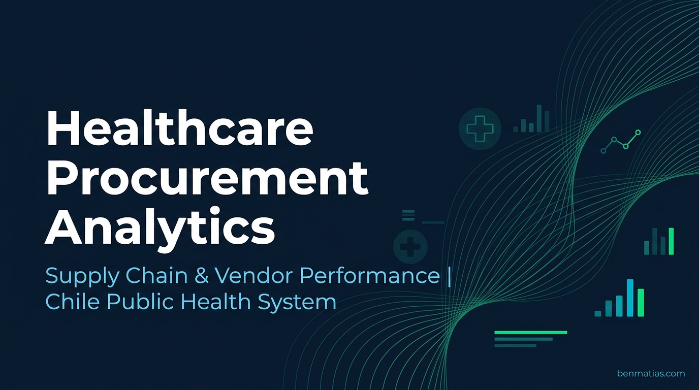

An independent analysis of Chile's public healthcare supply chain — examining vendor compliance failures, procurement effectiveness, and order fulfillment gaps to propose a data-driven vendor management model for systemic improvement.

CENABAST (Central Nacional de Abastecimiento) is Chile's public healthcare procurement agency, responsible for aggregating demand and managing supply of pharmaceuticals, medical devices, and food for the entire national health network. Operating without fiscal support, it sustains itself through commissions charged for its intermediation role — making procurement effectiveness directly tied to financial stability.
Aggregates demand from 500+ facilities to achieve bulk pricing unavailable to individual buyers — its core value proposition.
Operates via ChileCompra public tenders. Suppliers deliver directly to facilities; CENABAST never physically handles products.
Chronic vendor non-compliance — partial deliveries, false reporting, and late submissions — cascades into supply shortages for critical medications across the country.
Root-cause analysis structuring the systemic failure in vendor management. Effects flow upward; causes flow downward from the central problem.
The procurement cycle consists of 5 sequential sub-processes. Pain points are identified at each node based on documented operational failures (Jan–Jul 2019 reference period).
No systematic tracking of vendor delivery performance across contracts. Repeat offenders could continue winning bids without historical penalty.
Information from multiple sources processed manually. No integrated dashboard or holistic view of procurement status available to managers.
Fine system penalizes late information but not failure to submit. Vendors exploit this loophole, submitting no data to avoid triggering fines for partial fulfillment.
Existing reporting focused on unit quantities and spend. Data not used for operational decision-making, demand forecasting improvement, or vendor risk scoring.
Monthly breakdown of order fulfillment rate. January registered the worst performance while June–August showed seasonal improvement, possibly aligned with winter budget cycles.
Annual avg: 75.8% compliance → 24.2% non-fulfillment = 231,488 incomplete orders. Source: CENABAST Annual Report 2018.
After a dip in 2017 (likely under-reporting), complaints surged 82.9% in 2018, with "order shortfall" consistently the dominant cause.
The top offending vendor accumulated 64 sanctions across only 6 active contracts — a 1,067% sanction rate. This illustrates the absence of a vendor blacklist mechanism in the existing procurement model.
Ratio of intended-to-contracted vs. actually executed purchases. Rising effectiveness through 2017 reversed sharply in 2018 following a reduction in the product basket.
| Year | Intended Contracts | Executed | Effectiveness | Trend |
|---|---|---|---|---|
| 2015 | — | — | Baseline | — |
| 2016 | High | Lower | ↑ Improving | + |
| 2017 | Medium | High match | ↑ Best period | ++ |
| 2018 | Reduced basket | Lower % | ↓ Declined | − |
Basket reduction in 2018 eliminated zero/low-demand SKUs (positive efficiency signal), but overall execution rate fell due to vendor compliance failures.
Of 810,703 executed orders, 24.92% had confirmed shortfalls. 5 vendors concentrated the highest shortfall volumes — collectively responsible for 4.5 percentage points of total non-compliance.
Client-facing survey conducted across member health facilities to capture perceived service quality across procurement, logistics, executive attention, and billing dimensions.
Survey conducted by SISMARKET on behalf of CENABAST. Applied to a sample of client health facility administrators. Results used to validate operational diagnoses.
Direct translation of the Problem Tree into a solution-oriented framework. Each problem node becomes a measurable objective.
Four operational KPIs designed to monitor vendor compliance in near real-time, each with defined frequency, current baseline, and improvement target.
Units Delivered / Units Ordered × 100
Orders on Time / Total Orders × 100
Total Sanctions / Active Contracts × 100
Near-expiry Contracts / Total Active × 100
A structured scoring mechanism to rank vendors by compliance history. Scorecard integrated as mandatory evaluation input in all tender processes.
| Dimension | Metric | Weight | Frequency | Risk Flag |
|---|---|---|---|---|
| Delivery Volume | Compliance Rate (%) | 35% | Per delivery | <85% → High Risk |
| Punctuality | On-Time Rate (%) | 25% | Per delivery | 2+ late → Warning |
| Information Quality | Accurate Reports (%) | 25% | Monthly | 1 false report → Flag |
| Sanctions | Sanction Rate / Contracts | 15% | Semestral | 3+ → Tender Disqualification |
| Metric | AS-IS (2018–2019) | TO-BE Target | Key Intervention |
|---|---|---|---|
| Order Fulfillment Rate | 75.8% | ≥ 88% | Vendor scorecard in tender selection |
| Sanction Rate | 109% | ≤ 10% | Automated ERP reporting + revised fine rules |
| Near-Expiry Contracts | 24.6% | ≤ 5% | Daily expiry monitoring dashboard |
| Info Accuracy Fines | $1.695B CLP / yr | → 0 (eliminated) | ERP eliminates manual vendor data entry |
| Client Complaints | Reactive, trending ↑ | Proactive early warning | Real-time delivery tracking & alerts |
Applied ILPES/CEPAL Problem Tree methodology to structure root causes and systemic effects of vendor non-compliance into an actionable analytical hierarchy.
Mapped all 5 procurement sub-processes in BPMN 2.0 notation following the Ospina-Duque BPR methodology — documenting the AS-IS state and designing the TO-BE improvements.
Extracted and analyzed institutional datasets: monthly OTIF rates, vendor sanction logs, complaint causality data, and procurement effectiveness ratios across 4 fiscal years.
Analyzed a structured satisfaction survey (SISMARKET) covering intermediation quality, executive attention, logistics, and billing dimensions across member health facilities.
A fully interactive Tableau Public dashboard is in development — featuring OTIF tracking, vendor scorecard simulation, procurement funnel analysis, and complaint trend visualization using the datasets from this analysis.
In Development